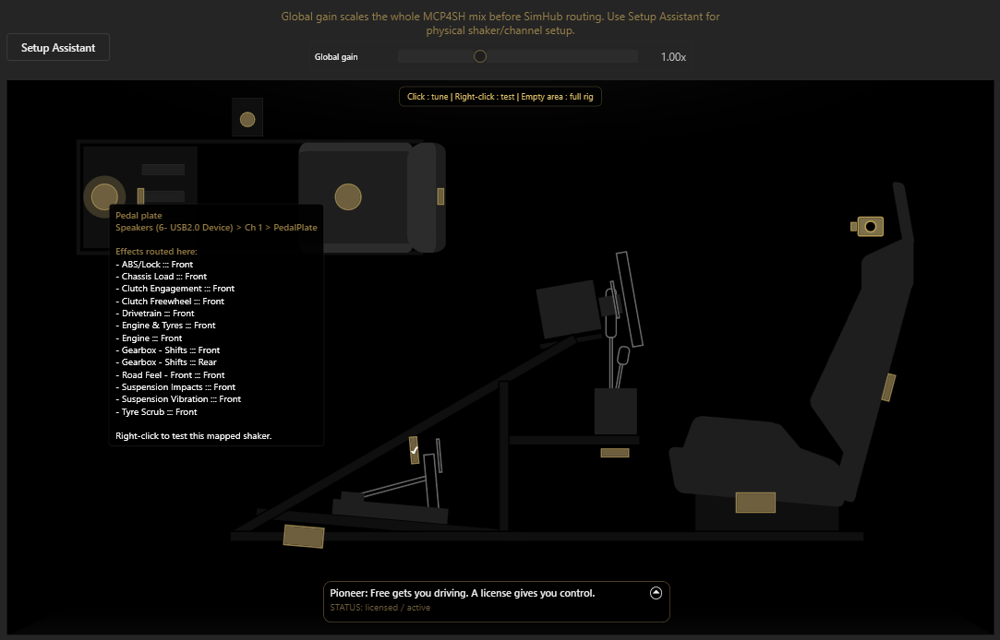

MCP4SH™ · String Theory Haptics for SimHub
High-level plugin overview
Haptics that aim to feel more like a weighted, connected chassis. Across games.
MCP4SH™ is a SimHub plugin built to make sim-racing haptics feel more connected, minimize masking and more intuitively useful overall. The goal is better info: tyre scrub, road and suspension details, drivetrain information, and less time wasted re-tuning everything from (almost) scratch every time you switch sim.
Yes, AI was used for drafting and faster iteration. The plugin's codec architecture was however entirely ideated, designed and constructed by me.
This project started as a thing I wanted to do because after getting new hardware and failing to back up my SimHub profiles, I didn't feel like searching for, or creating, a profile that felt right or believable for every game I play.
Ironically, a few hours of doing exactly that would've fixed my issue... but I digress; I figured, what if I take a different approach that allows me to just switch games whenever I like without having to second-guess if i'm feeling everything i'm expecting (or not)?
So I started building this, and as I progressed, I assumed others might have or find use for it, so I added some more useful features and decided to share.
Comparison Overlays showing haptic feedback driven by MCP4SH (right). Terrible driving, i know ;) .
The left shows how the raw data would enter and drive the effects, the right shows the plugin's codec output used by the effects.
Screenshots
A closer look at MCP4SH in practice, from effect tuning and profile structure to the tools and interface that shape the overall haptics workflow.
Wut?
Sanitized telemetry feed
MCP4SH tries to make grip, scrub, suspension, road texture, drivetrain, and weight-transfer style cues easier to separate and interpret. It will not make you faster, but it might help you be more consistent.
How?
Less #brrrzt
The goal is to reduce noise in the vibration signals so the feedback feels more coherent and, more like a moving chassis. Near-constant buzzing and not really knowing where it's coming from or trying to tame it, almost gone.
And why should i care?
Seat. Of. Pants.
Reliable, consistent haptics helps you trust what you are feeling faster, with less second-guessing and less re-tuning each time you wanna switch games because you're not sure anymore. It helps you drive intuitively.
Licensing and roadmap
Good to go, for free. License optional.
The base plugin is there to be usable and honest on its own. The license enables the ST Tensioner and gives you finer control over the other ST systems, and supports the work that keeps the project moving.
Current early-adopter option: Pioneer - 12.99 for up to 2 machines.
(early adopter bonus)Planned standard option: Supporter - 12.99 for 1 machine.
Planned later, if there's any demand: Pro - likely 19.99 with a higher machine allowance (5 and up).
The store listing is the source of truth for what is live right now. If the roadmap changes, the store and GitHub release notes will reflect that.
What license?
So, why would I pay for it?
- ST Tensioner: adds dynamic prioritization for effects based on their relevance to the moment. Helps you more clearly feel the car's tension build-up from what your hands and feet are doing. Tones some effects down and ramps up others relative to what's happening (burnout, slide, impacts, heave,...)
- ST Balancer: helps the effects stay in their lane and play nice with each game. Allows you to record a baseline mix and re-use that for other games.
- ST Learners: the adaptive, per-session dynamic behaviour based on the signals it gets from the game.
- Continued development & support: paid licenses also directly support future refinement, compatibility work, and general ongoing development.
You don't havse to, but
It enables:
And,
It allows for finer control of:
What you get
Features
- - A full suite of custom-designed haptic effects, built to feel like moving parts of a whole.
- - Multiple effects profiles suitable for use with common hardware found in the wild in DIY setups (see FAQ) and turn-key solutions like SRS UShake, HF8.
- - 3 Sound Output mapping profiles, based on a 2 amp config, with L and R channels mapped to front and rear effects respectively.
- - Rear-only tuned profiles.
- - Integrated UI for easy tweaking.
- - FOV advisor. (available in-game too via the dashboard)
- - Dashboard featuring raw and plugin data haptics visualization, FOV advisor and a digital rear-view mirror using SimHub's screen capture (setup info included).
- - Comparative Overlays (they'll eat some frames though, so maybe don't use in an actual race, ye be warned!)
- - Auto-launch apps for all your titles, or just the ones you want; e.g. The CrewChief, LookPilot,...
Still to come
- - Further implement GT7 support.
- - Better (more complete) ATS/ETS, Snow/Mudrunner, Beam.NG support.
- - Further refine current haptic profiles.
- - Add profiles for complex multi-stereo setups.
- - Expand on existing effects
(improve/add semantics for brake-state, suspension, flatspotting, sustained load/body load, traction transition,...). - - Expand on motion support implementation
(currently available for the daring, no official support, test at your own risk; look for MCP4SH.motion properties when experimenting). - - Looking into public API/SDK development.
- - Flight sim support ... ?.
FAQ
But errrm...
What does it actually do?
It is a SimHub ShakeIt Bass Shakers haptics plugin that tries to make feedback feel more like a car than a bunch of vibrations fighting for attention and bandwidth. The goal is to better separate tyre, scrub, road, suspension, drivetrain, and weight-transfer style cues so the rig feels more informative and less chaotic, and more intuitive.
Is this just “more vibration”?
No. That is the opposite of the point. MCP4SH is meant to reduce the sense of random buzzing and make the overall signal easier to trust. More output is not automatically better output.
Do I need to spend ages tuning it per game?
Nope, pretty much works out of the box. That said, rigs, transducer layouts, amps, and personal taste obviously still matter. This plugin does not fix foundational issues with factors that impact designed-for feel. The feel is going to be similar, but emphasis of some effects may differ due to how the data coming from the game is shaped.
That also means though, that different cars in a specific title also feel slightly different. The cleaner the telemetry from the game, the better this plugin will perform.
Does it work the same in every sim?
Mostly, yes. But no haptics solution works identically across every sim because telemetry quality and behaviour differ. MCP4SH is built to be broadly usable across common driving titles, but some sims will always give cleaner telemetry than others.
Why are there not more videos yet?
Because haptics are awkward to show well, and the project reached a releasable state before the showcase material was finished. Workin' on it.
Will "this" be better than what I have now?
Since I do not know your current experience or level of satisfaction with what you have, I can not accurately answer that.
What I can say is that this is intended to make it easier to set up per game, and that it is designed to feel more like a weighted, connected chassis. It is up to you to decide if I've accomplished that.
Will this work on my hardware?
If your current hardware is driven by SimHub ShakeIt Bass Shaker effects, then yes, it should.
However, and I can not stress this enough: Mounting discipline is crucial, not optional.
As I learned myself, all transducers on any given rig should be:
- mounted correctly: flush with it's mounting surface or virtual axle of energy-transfer
- hard-mounted: nuts and bolts, heavy duty doublesided mounting tape or strong zip-ties
- padded/pre-loaded: any gap inbetween should be filled to avoid dissonant reverberations
- isolated/separated: use shock-absorbing washers or bushings to isolate each transducer (sounds counterintuitive, i know), this limits frame/rig cross-talk
use this rule of thumb: if you can hear the shaker more than you feel it, it's not mounted right
What hardware was this designed on/for?
Testing setup was:
Any claim made about the quality of this plugin's output, is based entirely on my own frame of reference, which is, based on market-research, represents a decent demographic of both beginners and enthusiasts.
It should work on anything that connects to SimHub to get it's haptic effects via ShakeIt Bass Shakers.
- 2x Nobsound NS-10G Pro amps
- 2x Dayton BST-1 shakers (under pedal plate and seat)
- 3x Dayton TT25-16 pucks (brake, backrest, handbrake/shifter)
Any claim made about the quality of this plugin's output, is based entirely on my own frame of reference, which is, based on market-research, represents a decent demographic of both beginners and enthusiasts.
It should work on anything that connects to SimHub to get it's haptic effects via ShakeIt Bass Shakers.
Is this better than default SimHub effects?
No such claims are or will be made. Better or worse are both subjective terms.
That said, according to initial reviews and comments i've received, it is quicker to get going with something that's usable in most games. Tweaking for feel should be more intuitive.
That said, according to initial reviews and comments i've received, it is quicker to get going with something that's usable in most games. Tweaking for feel should be more intuitive.
How is it different then from default SimHub effects?
Effects in SimHub are mostly separated, the more you enable, the harder it becomes to keep them all making sense, especially when it matters. With MCP4SH, even with all effects enabled, you can still reliably tell the difference between what's firing, making it more intuitive to feel what the car is doing underneath you.
Why is there a paid version?
Because the project has a usable base layer and a more advanced adaptive layer. The paid side unlocks the finer control and dynamic prioritization of effects and helps fund the time, testing, and refinement needed to keep improving compatibility and behaviour across sims and hardware setups. Continuous improvement.
What does the paid version add?
The license unlocks control over the adaptive layer; this includes the ST Tensioner, ST Balancer, and ST Learner systems, and adds dynamic effects prioritization. Put simply, more control, better overall composure, and the more advanced, dynamic side of the plugin's codec. Also allows you to record the feel for your fav game and use that as the baseline mix for others (allows you to more or less transplant the feel from one game to another, not flawlessly, but still).
How do I install exactly?
Sanity/Reality check
Some disclaimers
This is not magic, instant pace, or one-click perfection (almost, but not quite). It is however a serious attempt to make haptics more coherent and useful, and plug and play (ish). Your rig, transducer layout, amp chain, gain staging, and sims still matter. The goal is to start from a stronger place and give you something more ready-to-use. It removes complexity in tuning without losing fidelity. Do not treat this as an "automagically fix my haptics" solution. If mounting discipline (see FAQ re. hardware) is meh, this will not fix that.